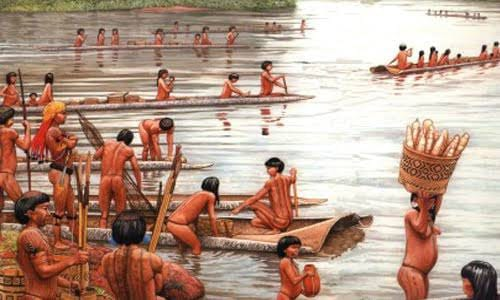
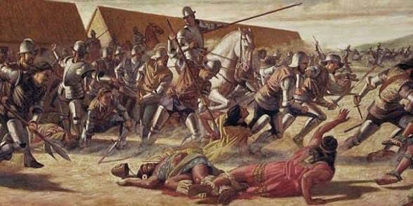
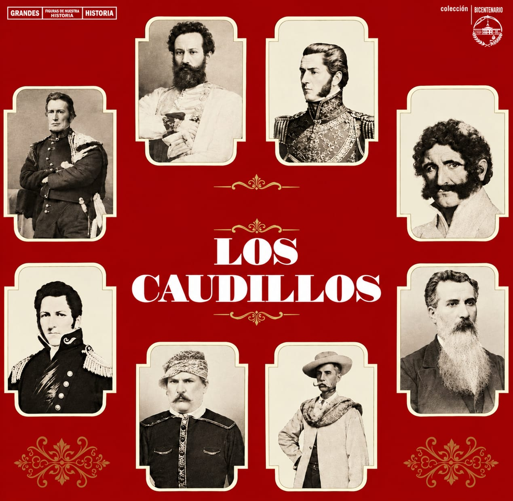
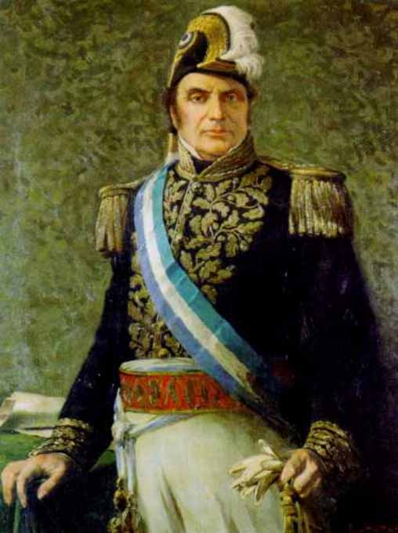
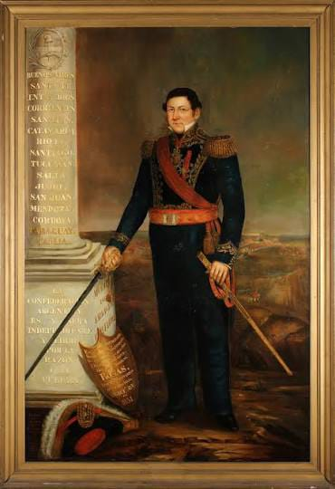
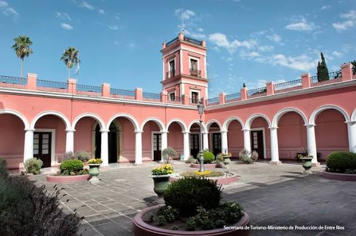
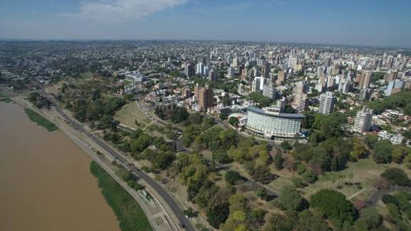

Desde los pueblos originarios hasta la organización nacional, Entre Ríos fue protagonista de importantes acontecimientos que marcaron la historia argentina.

Antes de la llegada de los españoles el territorion de entre rios estaba habitado por los chanas, cada uno tenia sus propias costumbres ,y formas de organización. Algunos pueblos se desplazaban para buscar alimentos, mientras que otros desarrollaban formas de vida más sedentarias. La pesca, la caza y la recolección eran actividades importantes para muchas de estas comunidades.

Con la llegada de los europeos comenzó un proceso de colonización que transformó la vida de los pueblos originarios. Los españoles fundaron ciudades y establecieron nuevas autoridades, actividades económicas y formas de organización social. Durante el período colonial, el actual territorio entrerriano formó parte de los dominios españoles en América. Con el paso del tiempo crecieron las poblaciones y las actividades ganaderas y comerciales.

Después de la Revolución de Mayo de 1810 y de la independencia de 1816, surgieron conflictos sobre cómo debía organizarse el territorio argentino. Algunas personas defendían un gobierno centralizado, mientras que otras apoyaban la autonomía provincial. En este contexto se destacaron los caudillos, líderes políticos y militares que tenían influencia en sus provincias. El federalismo defendía la autonomía de las provincias y su participación en la organización del país.
Francisco Ramírez fue uno de los principales caudillos de Entre Ríos. Participó en las luchas políticas y militares de comienzos del siglo XIX y defendió la autonomía provincial. En 1820 creó la República de Entre Ríos, una organización política que comprendía Entre Ríos, Corrientes y Misiones. Este proyecto tuvo una duración breve y terminó en 1821, después de la muerte de Ramírez.

Juan Manuel de Rosas fue un político y militar que gobernó la provincia de Buenos Aires durante dos períodos. En 1835 asumió con la suma del poder público, concentrando amplias facultades de gobierno. Durante su segundo gobierno mantuvo una gran influencia sobre las relaciones exteriores de la Confederación Argentina. Sin embargo, existían conflictos con distintos sectores que defendían una organización constitucional y una mayor autonomía de las provincias.

Justo José de Urquiza fue un militar y político entrerriano. Gobernó Entre Ríos y se convirtió en una figura fundamental de la organización nacional. Aunque inicialmente tuvo vínculos políticos con Rosas, luego se enfrentó a su autoridad. En 1851 realizó el Pronunciamiento de Urquiza, mediante el cual cuestionó el manejo de las relaciones exteriores por parte de Rosas. En 1852, Urquiza derrotó a Rosas en la batalla de Caseros, un acontecimiento que abrió una nueva etapa política para el país.

El Palacio San José fue la residencia de Justo José de Urquiza y se encuentra en el departamento Uruguay, en la provincia de Entre Ríos. Su construcción comenzó en 1848 y continuó durante varios años. Además de ser su vivienda familiar, el palacio fue un lugar relacionado con su actividad política. Su arquitectura, sus patios y sus jardines permiten conocer aspectos de la vida de la época. Actualmente funciona como museo histórico nacional.

Después de la batalla de Caseros, la organización nacional avanzó con la sanción de la Constitución Nacional en 1853. Sin embargo, Buenos Aires se separó de la Confederación durante varios años. Paraná fue la capital de la Confederación Argentina entre 1854 y 1861. Allí funcionaron las principales autoridades nacionales y se tomaron decisiones políticas importantes para la organización del país. Durante este período, Entre Ríos tuvo un papel destacado gracias a Urquiza y a su participación en los procesos políticos que buscaban organizar constitucionalmente la Argentina.